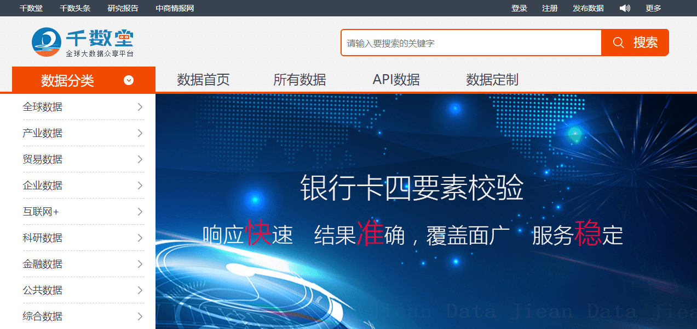
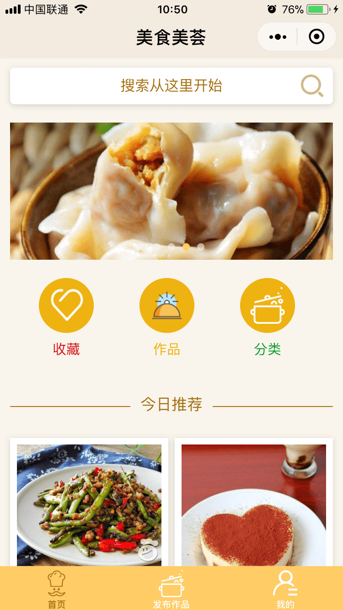
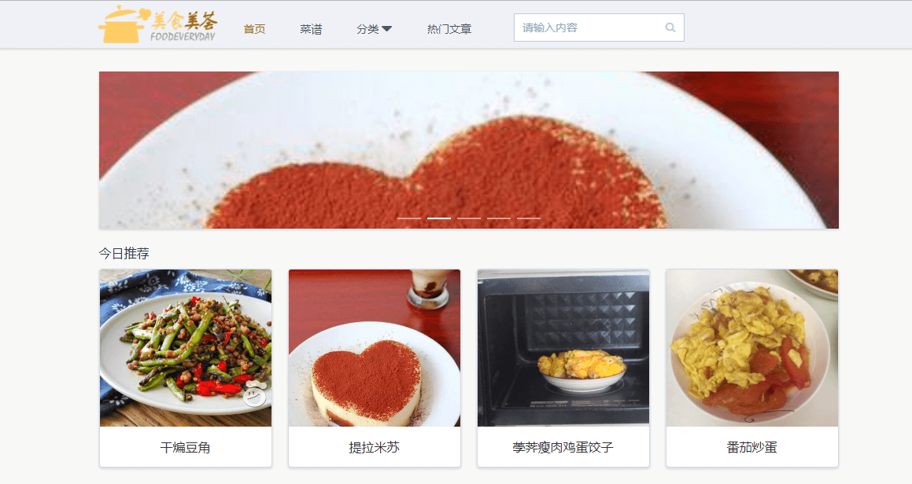
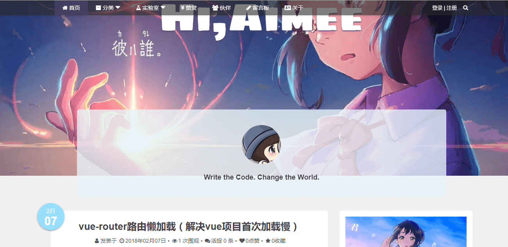

Aimee的简历
基本信息
- 名字：Aimee（江芊）
- 性别：女
- 毕业院校：湖北大学知行学院
- 毕业时间：2015年7月
- 博客：www.mangoya.cn
- GitHub：www.github.com/Aimee1608
联系方式
- 电话：15549483738
- 邮箱：shuigongqian@sina.com
- 微信：jq15549483738
- QQ：895903966
应聘岗位
前端研发工程师
项目与工作经验
北京行圆汽车信息技术有限公司（2017.1——至今）
-
商务产品
负责行圆汽车商务产品的H5前端主要研发工作，项目采用长图 （荣威汽车）、分层视觉 (奥迪100周年)、答题 （东南汽车）、拼图滑块 （东标1）、canvas动画 (东标2)、留资 （宝沃BX7）、图片合成 （父亲节）、360陀螺仪全景旋转（拜年H5）等多种的形式，分发在微信以及美团、今日头条等app上，作为典型的营销H5，多种新颖形式
使用 skrollr 、swiper、three.js、create.js等插件 和 AnimateCC 动画软件来实现前端动画效果，使用less 预处理器 定义rem 来实现各个手机设备尺寸的自适应
-
内部项目
参与营销运营部的 赤兔联盟电商平台系统的前端开发，该项目后端由.net 和 java 实现，前端主要使用layui实现样式，我主要负责了多参数的表单数据的新增、读取和修改，用户角色繁杂。
使用 ejs 以及 jquery 实现前端数据的绑定，以及相关组件的开发
中商情大数据股份有限公司（2014.12——2016.12）
-
中商情报网
该项目是中商的新闻门户网站，大量的产业以及新闻数据展示。负责前端开发工作，包括页面布局，数据库渲染，分为 PC版和 H5移动版
使用jquery、swiper等插件，实现页面布局等
-
八方查数据网站
该项目主要是中商企业注册等工商信息查询产品，负责canvas动画，响应式样式HTML5/CSS，实现AJAX请求，数据动态加载等前端开发工作，以及多条件嵌套查询等功能。
使用 vue.js 框架和 Less 预处理器 来实现前端组件及数据交互， 使用 webpack 构建
-
千数堂
该项目为商情数据的数据电商模块业务，商品为产品为各行业的产业数据，包括登录注册、首页、详情、购买、用户中心等页面模块，完整的电商平台
负责canvas动画，响应式样式HTML5/CSS，实现AJAX请求，数据动态加载等前端开发工作，以及多条件嵌套查询等功能。
使用 jquery easyui 实现组件样式，使用vue.js 实现数据交互

个人项目
-
美食美荟小程序
微信小程序出来后，由于本人有做饭的兴趣爱好，就开发了一个菜谱小程序，针对于普通用户可以发布、点赞、收藏作品，还可以根据分类以及关键字搜索作品，对于管理员除了以上功能外，另外添加了审核用户发布的作品功能，可通过或者驳回，详细体验扫描下方二维码;后端接口由Qinlh提供

-
美食美荟网站
根据美食美荟小程序，使用vue.js改版了一个网页版的美食美荟网站，兼容pc和移动端，但只有数据展示，没有用户登录模块了，后端接口同美食美荟相同
使用 vue.js 框架和 Less 预处理器 来实现前端组件及数据交互， 使用 webpack 构建

-
个人博客
用于技术分享和总结的个人博客，兼容pc和移动端，用户可通过邮箱注册，邮箱验证通过后，可以登录博客，实现收藏点赞以及留言评论回复等功能，还可以展示个人链接，未登录状态可以以游客方式留言，后端接口由Qinlh提供
同样使用 vue.js 框架和 Less 预处理器 来实现前端组件及数据交互， 使用 webpack 构建，另外使用shCore.js实现代码样式

-
Aimee resume
这个简历的源码,设计优雅、内容完善的静态简历页面,可下载world文档
-
其他
日常中研究的一些小插件，360度查看产品展示，jquery版手风琴，jqueryEmoji表情包，加载遮罩模板封装，折叠留言楼层-递归等，可查看 上的源代码
掌握技能
前端
-
HTML/CSS
能够编写语义化的 HTML，模块化的 CSS，完成较复杂的布局,熟练使用css3属性完成炫酷的H5动画效果
熟悉Less等CSS预处理和模块化工具
-
JavaScript
熟悉原生 Javascript，能脱离 jQuery 等类库编码
能够封装构造函数类插件及组件
-
框架类
能够熟悉使用vue.js框架并结合ElementUI进行模块化页面开发
熟练使用css3属性结合swiper.js skrollr.js完成炫酷的H5动画效果
熟练使用jquery插件，以及基于jquery开发的插件
后端
-
Node.js
了解node.js ,熟悉安装node模块，基于node.js 开发vue模块化的个人博客以及美食网站，并用webpack打包构建优化
-
PHP
学习中，明白简单的语法，能看懂Thinkphp模块以及简单的写法，结合Navicat进行简单的数据录入以及增删改查
其他
-
小程序
能够熟悉工具类数据展示类样式类的小程序的开发，熟悉使用小程序开发调试工具，熟悉小程序开发流程及相关规则
-
AnimateCC
熟悉使用AnimateCC结合create.js开发炫酷交互类H5，并兼容移动端各种设备
-
软件类
了解PS软件的使用，能够对设计进行简单的修改；
熟悉使用GoldWave剪辑音频
熟练使用phpStudy部署本地服务器